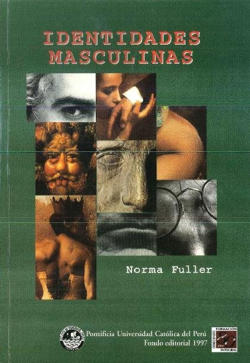
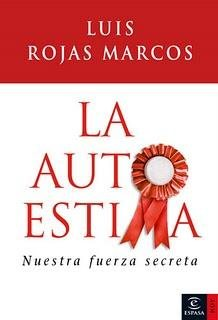

Libros de personalidad e identidad
Libros de personalidad e identidad en español: 20 libros completos para leer gratis aquí mismo y 11 fichas de títulos actuales.
AutoestimaPsicología de la personalidadCarácterTeoría de los rasgosModelo de los cinco grandesTemperamentoEstabilidad de la personalidadCambio de personalidadIntroversión y extraversiónAutoconceptoPsicología de la identidadIdentidad socialIdentidad personalAutoconocimientoDiferencias individualesAutenticidadValores personalesAutoimagen
Estigma, autoestigma y sesgos clínicos en el proceso de evaluación psicológicaSánchez, Alberto; Kulisevsky, Elena; Martín-Pozuelo Martín, Mónica; Monfort, Jaume; Planellas, Irina
Estigma, autoestigma y sesgos clínicos en el proceso de evaluación psicológicaSánchez, Alberto; Kulisevsky, Elena; Martín-Pozuelo Martín, Mónica; Monfort, Jaume; Planellas, IrinaSíntesis Integradora de la Personalidad y sus Trastornos: Síntesis integradora de las dimensiones básicas [2023]Ruiz Rodríguez, José
Síntesis Integradora de la Personalidad y sus Trastornos: Síntesis integradora de las dimensiones básicas [2023]Ruiz Rodríguez, JoséCaracterísticas y evolución de chicos y chicas con familias colaboradoras y relaciones y contactos con sus familias de origen: Informe descriptivo, comparativo y multi-informanteEspinosa, Elizabeth; Molano Mérida, Nuria; León Manso, Esperanza
Características y evolución de chicos y chicas con familias colaboradoras y relaciones y contactos con sus familias de origen: Informe descriptivo, comparativo y multi-informanteEspinosa, Elizabeth; Molano Mérida, Nuria; León Manso, EsperanzaSer adolescente. ¿Transición o destino?Fandiño, Ricardo; Rodriguez-Pousada, Vanessa
Ser adolescente. ¿Transición o destino?Fandiño, Ricardo; Rodriguez-Pousada, VanessaLos videojuegos: ¿un problema de distracción o una oportunidad para aprender?Occelli, Maricel; Malin Vilar, Tania
Los videojuegos: ¿un problema de distracción o una oportunidad para aprender?Occelli, Maricel; Malin Vilar, TaniaLa personalidadAntonio Andrés Pueyo
La personalidadAntonio Andrés PueyoCTCPS-MAC: Batería para el estudio de las condiciones de trabajo de carácter psicosocialCarrión García, María Ángeles
CTCPS-MAC: Batería para el estudio de las condiciones de trabajo de carácter psicosocialCarrión García, María ÁngelesEstilo de crianza y construcción del autoconcepto en adolescentesSaavedra Guajardo, Eugenio
Estilo de crianza y construcción del autoconcepto en adolescentesSaavedra Guajardo, EugenioIdentidades masculinas : varones de clase media en el PerúFuller Osores, Norma J.
Identidades masculinas : varones de clase media en el PerúFuller Osores, Norma J.
Maria marimacha : los caminos de la identidad femeninaRivera, Cecilia
Maria marimacha : los caminos de la identidad femeninaRivera, CeciliaPsicología médica. Parte III: personalidad y psicología del desarrolloGarcía Arroyo, José Manuel
Psicología médica. Parte III: personalidad y psicología del desarrolloGarcía Arroyo, José ManuelPsicología para odontólogos. Parte IV y V: personalidad y enfermedadGarcía Arroyo, José Manuel
Psicología para odontólogos. Parte IV y V: personalidad y enfermedadGarcía Arroyo, José ManuelEl Hombre Mediocre: Ensayo de psicologia y moralIngenieros, José, 1877-1925
El Hombre Mediocre: Ensayo de psicologia y moralIngenieros, José, 1877-1925Características de las dificultades de aprendizaje en niños de 8 a 11 años de Medellín - ColombiaUribe Pedroza, Luz Helena; Vélez Jaramillo, María Elena; Echeverry Jaramilo, Liliana María; Pineda Salazar, David Antonio; Gómez Betancur, Luz Ángela
Características de las dificultades de aprendizaje en niños de 8 a 11 años de Medellín - ColombiaUribe Pedroza, Luz Helena; Vélez Jaramillo, María Elena; Echeverry Jaramilo, Liliana María; Pineda Salazar, David Antonio; Gómez Betancur, Luz ÁngelaConducta e inmunidadVidal Gómez, José
Conducta e inmunidadVidal Gómez, JoséLos adolescentes en el siglo XXI. Un enfoque psicosocialAdolfo Perinat Maceres, Antonio Corral, Edelmira Domènech Llaberia y otros
Los adolescentes en el siglo XXI. Un enfoque psicosocialAdolfo Perinat Maceres, Antonio Corral, Edelmira Domènech Llaberia y otrosPsicofarmacología, terapias psicológicas y tratamiento combinados (II). Eficacia comparada en los trastornos mentalesFernandez-Teruel, Alberto
Psicofarmacología, terapias psicológicas y tratamiento combinados (II). Eficacia comparada en los trastornos mentalesFernandez-Teruel, AlbertoEl coaching emocionalMireia Cabero Jounou
El coaching emocionalMireia Cabero JounouInventario de personalidad para jóvenes de Th. Millon : adaptación española del M.A.P.I.Jiménez Gómez, Fernando; Ávila Espada, Alejandro; Sánchez Crespo, Guadalupe; Merino Barragán, Vicente
Inventario de personalidad para jóvenes de Th. Millon : adaptación española del M.A.P.I.Jiménez Gómez, Fernando; Ávila Espada, Alejandro; Sánchez Crespo, Guadalupe; Merino Barragán, VicenteLos simuladores del talento en las luchas por la personalidad y la vidaJosé María Ramos Mejía
Los simuladores del talento en las luchas por la personalidad y la vidaJosé María Ramos MejíaAutoestima automáticaSilvia Congost
Autoestima automáticaSilvia CongostEl poder de los introvertidosSusan Cain
El poder de los introvertidosSusan CainEnamórate de tiWalter Riso
Enamórate de tiWalter RisoEl cerebro: nuestra historiaDavid Eagleman
El cerebro: nuestra historiaDavid EaglemanLos dones de la imperfecciónBrené Brown
Los dones de la imperfecciónBrené BrownLa autoestimaLuis Rojas Marcos
La autoestimaLuis Rojas Marcos
El caballero de la armadura oxidadaRobert Fisher
El caballero de la armadura oxidadaRobert FisherEl hombre lightEnrique Rojas
El hombre lightEnrique RojasMujeres que corren con los lobosClarissa Pinkola Estés
Mujeres que corren con los lobosClarissa Pinkola EstésEl proceso de convertirse en personaCarl R. Rogers
El proceso de convertirse en personaCarl R. RogersLos seis pilares de la autoestimaNathaniel Branden
Los seis pilares de la autoestimaNathaniel BrandenTemas relacionados
¿Estás eligiendo carrera?
Haz gratis el test de orientación vocacional de AURZANE: intereses, aptitudes, autoconcepto y hábitos de estudio, con informe completo.